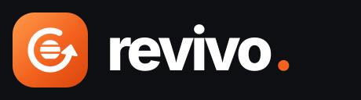
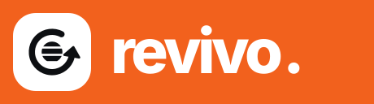
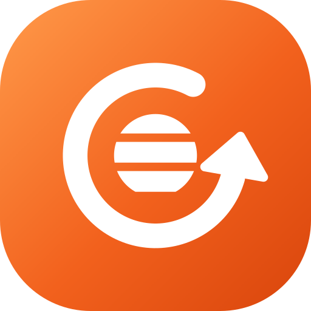

Identidade visual · v2.0
Impressão 3D para reparar em vez de substituir. O símbolo junta um ciclo de renovação (a segunda vida dos objetos) a um disco feito por camadas (a impressão 3D). O nome escreve-se em minúsculas, com o ponto laranja como assinatura.
Principal — fundos claros

Negativo — fundos escuros

Monocromático — sobre laranja ou fotografia

Usado como favicon, ícone da app e avatar. Área de proteção: ¼ da largura do símbolo à volta. Tamanho mínimo: 16 px.
Laranja filamento#F2611D
Gradiente Revivo#F2611D → #FFB547
Verde reparação#1F9D6B
Grafite#0D0F12
Papel#FAF8F5
Títulos e texto
Pesos 400–800. Títulos a 800 com espaçamento apertado (−0,05 em).
Rótulos e números
Em maiúsculas espaçadas para etiquetas (EYEBROW), preços técnicos e passos.